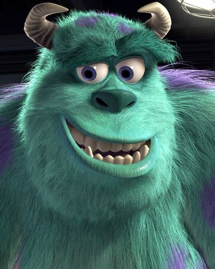

What started out as naming the first fur baby according to Sullivan, from Monsters Inc, has become tradition in naming all Disney themed names.


What started out as naming the first fur baby according to Sullivan, from Monsters Inc, has become tradition in naming all Disney themed names.
Pacha has become part of tradition as he was named after, "The Emperor's New Groove's" character: Pacha.
Grr Grr is our nickname for Leo, our cat. He marches to a beat of his own drum, so naming him out of tradition was not to his liking.